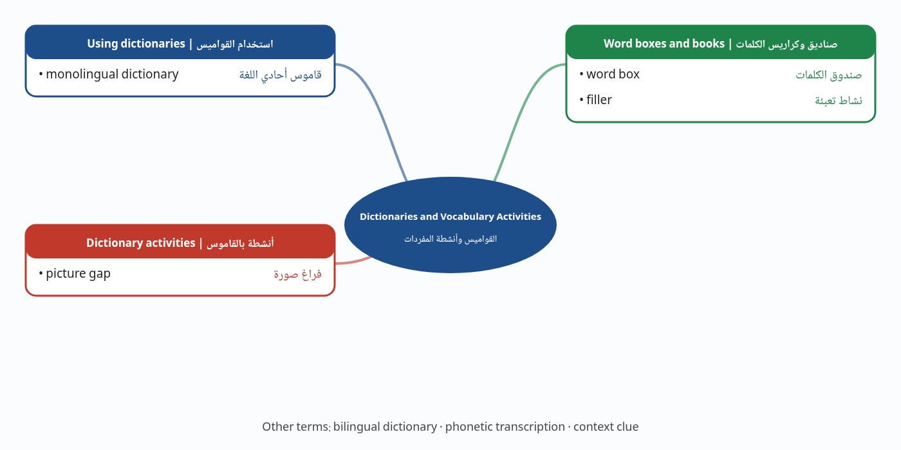

Learn TEFL
⭐
0
🔥
استمر!
🎓
كورس TEFL العملي ١٤: القواميس وأنشطة المفردات
📊
المستوى: ابتدائي
درس ١٤
🎓
TEFL
📄 حمّل PDF الدرس
📝 ملخص الدرس (عربي) PDF
📝 Lesson Summary (English) PDF
🧠 الخريطة الذهنية PDF
🧠 شوف الخريطة الذهنية للدرس

→
الدرس اللي قبله
كل دروس الكورس
الدرس اللي بعده
←